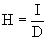
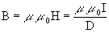
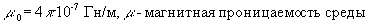
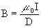
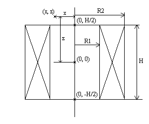
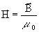

Получение сверхсильных импульсных магнитных полей в микроскопических объемах
К сильным магнитным полям можно условно отнести поля, индукция которых находится в диапазоне 5 ... 100 Тл (50 ... 1000 кГс), а к сверхсильным - поля с индукцией больше 100 Тл (больше 1 МГс) [9]. Классификация обусловлена следующими, скорее, затратными по своей сущности соображениями. Постоянные магнитные поля с индукцией до 5 Тл можно получать с помощью сравнительно недорогих электромагнитов с медными обмотками и стальными сердечниками. При получении постоянных магнитных полей с большей индукцией затраты существенно возрастают, например, приходится использовать сверхпроводящие электромагниты. Импульсные магнитные поля с амплитудой индукции 5 ... 100 Тл могут быть получены также не слишком дорогими методами, причем многократно с помощью неразрушаемых соленоидов. Генерация импульсных магнитных полей с амплитудой индукции больше 100 Тл носит, как правило, одноразовый характер и сопровождается частичным разрушением установки, что, конечно, ведет к росту затрат.
Вариант 1
Для одновитковой катушки диаметром D, по которой течет ток I, напряженность магнитного поля в центре равна [4]:

Индукция магнитного поля в центре витка:

где

Считая магнитную проницаемость среды равной 1, т. к. вклад ферромагнитных материалов (около 1.5 Тесла) в случае сверхсильных магнитных полей (~ 100 Тл) пренебрежимо мал, получаем:

Для катушки диаметром 1 мкм при амплитудном значении импульса тока, равном 100 А, получаем B ~ 125 Тл.
Катушки диаметром 1 мкм при достигнутых в микроэлектронике технологических нормах порядка 0.1 мкм изготовить вполне возможно. Величина импульса тока также не представляется слишком большой.
Необходимо добиться того, чтобы амплитуда импульса тока достигла требуемого значения до того, как катушка разрушится. Этого можно попробовать добиться, варьируя соотношение длительности импульса и напряжения источника, т. е. выбирая емкость и напряжение конденсатора, разряжаемого на катушку. Возможно, удастся достичь таких параметров импульса, что катушка не разрушится, т. е.сможет использоваться многократно.
Так как магнитное поле получается в малом объеме, то его градиент большой, что, возможно, также может найти применение.
Вариант 2
Импульсные магнитные поля с индукцией порядка 100 Тл можно также получать с помощью многовитковых соленоидов, технология изготовления которых менее экзотична. Через обмотку соленоида пропускается импульс тока с амплитудой, достаточной для получения необходимой величины магнитной индукции. Длительность импульса должна быть такой, чтобы обмотка не нагревалась до температуры, при которой происходит ее разрушение. Расчет магнитного поля цилиндрического соленоида может быть произведен с помощью программы Coil [1]. Программа UNI [3] позволяет найти амплитуду и время нарастания тока до максимума при различных способах генерации. Рассчитать перегрев обмотки при одиночном синусоидальном импульсе тока заданной амплитуды и длительности для различных металлов можно с помощью программы dTWire [2].
На рисунке изображен цилиндрический многовитковый соленоид в разрезе.

Обозначения:
R1 - внутренний радиус соленоида
R2 - внешний радиус соленоида
H - высота соленоида
D - диаметр обмоточного провода без изоляции (для проводов прямоугольного
сечения производится пересчет по формуле D=(4s/p)1/2,
где s - площадь поперечного сечения провода, м2)
l - фактор упаковки
(отношение площади, занятой проводом в поперечном сечении соленоида без учета
изоляции, к площади поперечного сечения соленоида) [10]
x - радиус точки (относительно точки (0, 0)), в которой требуется рассчитать
составляющие магнитной индукции
z - высота точки (относительно точки (0, 0)), в которой требуется рассчитать
составляющие магнитной индукции
Расчет с помощью программы Coil [1] для R1 = 0.5 мм, R2 = 1 мм, H = 3 мм, D = 0.1 мм (провод медный), l = 0.6 дает значение магнитной индукции в центре соленоида ~93 Тл и ~50 Тл на краях (в точках (0, -H/2) и (0, H/2)) при амплитуде тока ~2200 А. Расчет с помощью программы dTWire [2] показывает, что для одиночного синусоидального импульса тока амплитудой 2200 А при длительности менее 1 мкс перегрев медной обмотки не будет превышать 180 0C. Такой перегрев можно считать приемлемым. Технически проблема заключается в построении генератора мощных импульсов тока с соответствующими параметрами и изготовлении соленоида, способного выдерживать импульсы напряжения в несколько киловольт без пробоя изоляции и импульсы тока в несколько килоампер без разрушения обмотки.
Вполне реализуемым представляется следующий вариант: батарея конденсаторов суммарной емкостью 40 мкФ с начальным напряжением 4000 В разряжается на цилиндрический соленоид с параметрами: R1 = 0.5 мм, R2 = 2 мм, H = 4 мм, D = 0.45 мм (провод медный), l = 0.6, число витков 23, сопротивление 0.019 Ом, индуктивность 0.4 мкГн. Амплитуда импульса тока ~16 кА, длительность импульса тока ~9 мкс (время достижения максимума ~4.5 мкс от момента включения), амплитуда магнитной индукции в центре соленоида ~99 Тл, на краях ~55 Тл. Перегрев обмотки за один импульс не более 180 0C. Если использовать предварительное охлаждение соленоида до -20 0C, реализуемое дешевыми доступными средствами (в бытовой морозильной камере), конечная температура не превысит 160 0C. При такой температуре можно использовать обмоточный медный провод в эмалевой изоляции и эпоксидный компаунд для пропитки.
При расчетах не учитывался скин-эффект.
Некоторые практические шаги к получению сильных и сверхсильных магнитных полей в малых объемах сделаны [12].
Соотношение между напряженностью и индукцией магнитного поля
В вакууме или воздухе:

(в системе единиц СИ)
где H – напряженность магнитного поля,
B – индукция магнитного поля, m0 = 4p ∙ 10-7 В ∙ сек/А ∙ м = 4p ∙ 10-7 Гн/м – магнитная постоянная [4].
| Индукция, Тл (система СИ) |
Индукция, кГс (система СГС) |
Напряженность, МА/м (система СИ) |
Напряженность, кЭ (система СГС) |
| 1 | 10 | 0.796 | 10 |
| 1.26 | 12.6 | 1 | 12.6 |
| 2 | 20 | 1.591 | 20 |
| 2.51 | 25.1 | 2 | 25.1 |
| 5 | 50 | 3.979 | 50 |
| 6.28 | 62.8 | 5 | 62.8 |
| 10 | 100 | 7.958 | 100 |
| 12.57 | 125.7 | 10 | 125.7 |
| 15 | 150 | 11.937 | 150 |
| 18.85 | 188.5 | 15 | 188.5 |
| 20 | 200 | 15.91 | 200 |
| 25.1 | 251 | 20 | 251 |
| 50 | 500 | 39.79 | 500 |
| 62.8 | 628 | 50 | 628 |
| 100 | 1000 | 79.58 | 1000 |
| 125.7 | 1257 | 100 | 1257 |
| 150 | 1500 | 119.37 | 1500 |
Тл - тесла, кГс - килогаусс, МГс - мегагаусс, МА/м - мегаампер на метр, кЭ - килоэрстед.
Ссылки:
01.09.2003
27.01.2007
29.01.2007
03.02.2007
08.02.2018
Альтернативные источники
энергии
Компьютеры и
Интернет
Магнитные поля
Механотронные системы
Перспективные разработки
Электроника и
технология